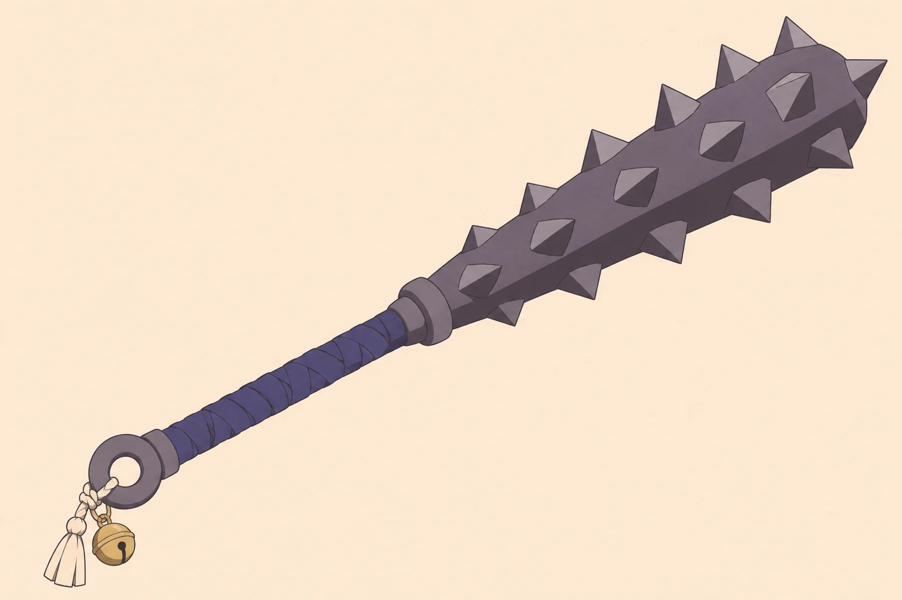
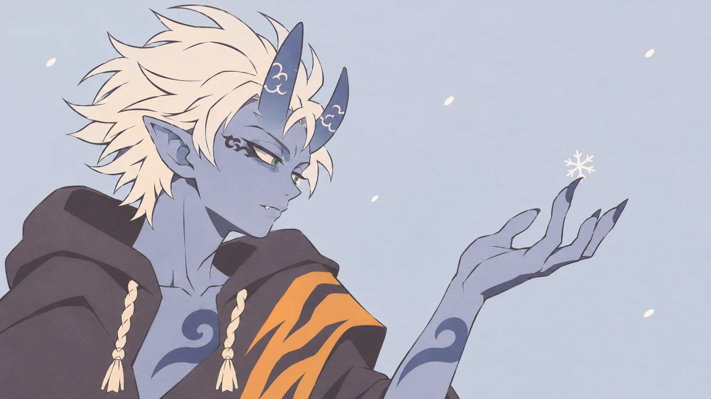
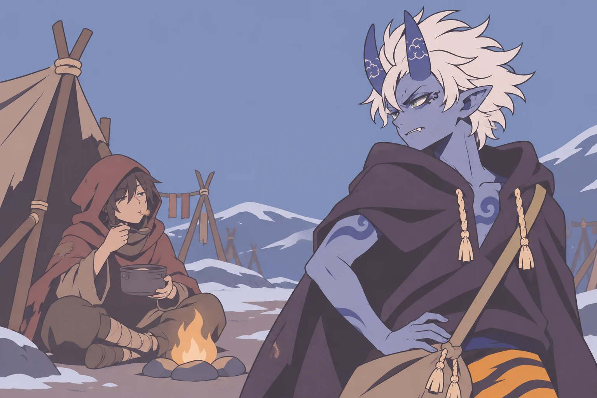
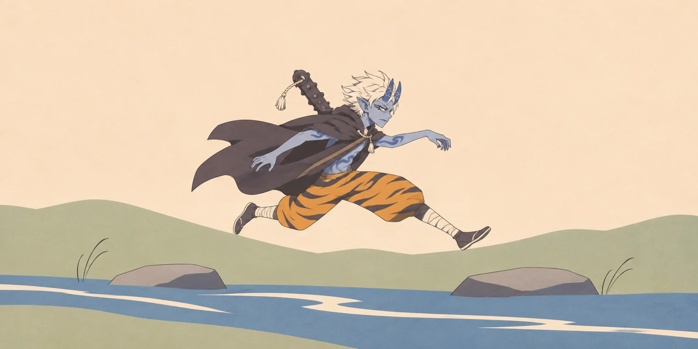

Синий демон
Соломон
«Сол» Кири
«че зыришь глаз пузыришь»
- Возраст
- 15 лет
- Рост / вес
- 192 см / 82 кг
- Раса
- Они
- Происхождение
- Верховье
- Нынешнее место
- Квестпост
- Племя
- Синие демоны

Глава первая
Лик синего демона
Соломону пятнадцать. Он атлетичен, хотя для Они сложён довольно обычно. Среди ровесников других рас его трудно проглядеть. Синяя кожа, белые волосы, длинные когти, а ростом этот детина уже почти два метра. Рядом с ним ровесники кажутся малютками, да и самого Сола легко принять за кого-то постарше.
Сол носит традиционную одежду своего племени. Шкуры диких зверей идут на меховые накидки, а ткань для одежды ткут племенные мастера.

Глава вторая
Нрав, острый как клык
Соломон из тех, кого лучше обходить стороной. Кири — отъявленный задира с душой воина. Докопаться до кого-нибудь и ввязаться в драку для него обычное дело. Любит шугать слабых и наглеть, пока ему это сходит с рук. Мягко говоря, тип неприятный.
Сол любит свою огромную шипастую дубину, но и колющее оружие у него всегда при себе — собственные слова. Задеть за больное и спровоцировать собеседника на драку для него как делать нехер.
Чаще всего он прекрасно понимает, что делает. Кири нравится чувствовать своё превосходство, особенно когда хватает пары слов, чтобы вывести кого-нибудь из себя. С виду непроходимый придурок, а язык за зубами держать умеет. Когда хочет.
Есть, впрочем, верный способ разозлить и самого Сола. Стоит кому-нибудь поднять на смех его происхождение или задеть честь племени — и от хладнокровия мало что остаётся. Тут юнец уже срывается, а достаётся порой и тем, кто просто оказался рядом.

Глава вторая · продолжение
Оружие и память
Из оружия Солу милее всего тяжёлая шипастая дубина. Но прежде чем взяться за неё, он обычно успевает уколоть противника словом.
Рассмотреть канабо

Глава третья
Холодные выси
Холодные выси… Где-то на заснеженных вершинах обитало племя синих демонов. Эти воины жили в стороне от остального мира. Когтями они разрывали плоть, зубами впивались в добычу, а дьявольской силы им хватало, чтобы метать скалы.
Однажды синие демоны исчезли со старого континента. Вновь о племени услышали уже после катаклизма, далеко за морем.

Глава третья · продолжение
Среди синих демонов
Говорят, верховный шаман узнал о грядущей катастрофе раньше многих королей. Он повёл племя за море в надежде начать жизнь заново. Даже до отплытия синих демонов едва набиралось два десятка. Путь пережили лишь немногие.
В новом мире демоны поселились в лесах нынешнего Верховья. Там ещё можно было жить так, как привыкли дома, но и здесь племя гнали.
Соломон родился в тяжёлое время. Стычки с соседями и бандитами были обычным делом, а правители Верховья притесняли демонов. Впрочем, и сами демоны грабили местных поселенцев, а порой убивали даже случайных путников. С каждым набегом и каждой расправой ненависть росла с обеих сторон.
Сол рос буйным даже по меркам своих и уже в юности был одним из сильнейших в племени. Казалось бы, жизнь неплоха: драки, разбои и прочее веселье. Да только достойные противники попадались всё реже.

Глава четвёртая
Незваный гость
Однажды в становище синих демонов по ошибке забрёл путник. С виду — обычный бродяга. Окажись кто другой посреди целого племени демонов, давно бы дал дёру.
А этот как ни в чём не бывало съел припасы, которых племени хватило бы на целую неделю, и уселся греться у костра.
Когда старшие полезли в драку, он за считаные минуты раскидал их, как щенков. Последним вышел Сол. Так унизительно он ещё не проигрывал.
Впервые в жизни поражение его и подавило, и воодушевило. Проигрыш больно ударил по самолюбию. Но если уж случайный бродяга оказался ему не по зубам, кого ещё можно встретить за пределами родных лесов?
В мире оказалось куда больше силы, чем Сол привык видеть вокруг себя.

Глава пятая
За пределами племени
Оправившись после драки, Сол собрал свои нехитрые пожитки и покинул племя. Хотелось посмотреть, что там за мир такой, откуда приходят подобные бродяги. Да и реванш у обидчика он ещё собирался взять.
В одиночку и без денег странствовать оказалось тяжело даже ему. В одной деревенской таверне после очередной драки Сол услышал о Квестпосте. Говорили, там останавливаются странники и среди них хватает интересных людей. А главное — сильных.
Этого ему хватило. Недолго думая, Сол отправился в Квестпост. Дорога предстояла дальняя, а что ждало его в конце пути, он и сам не знал.
К началу летописи ↑